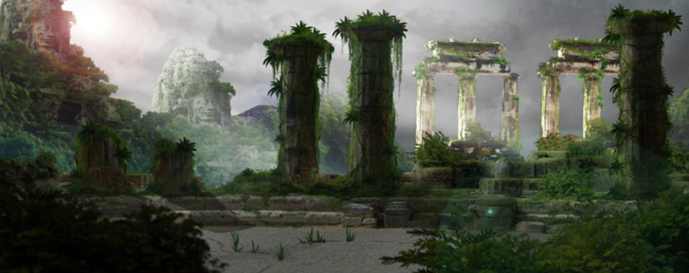
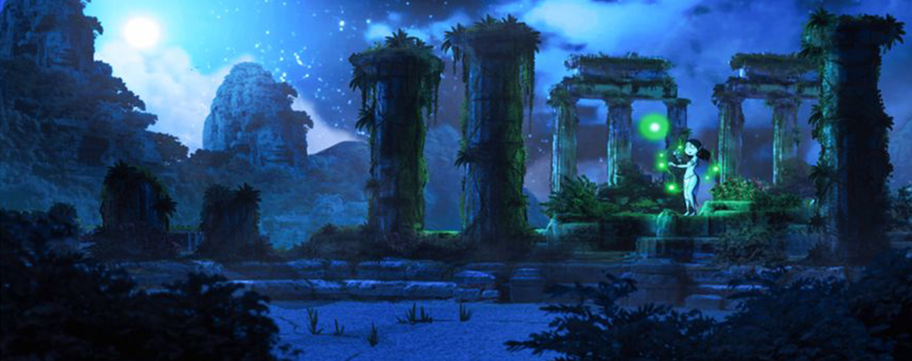
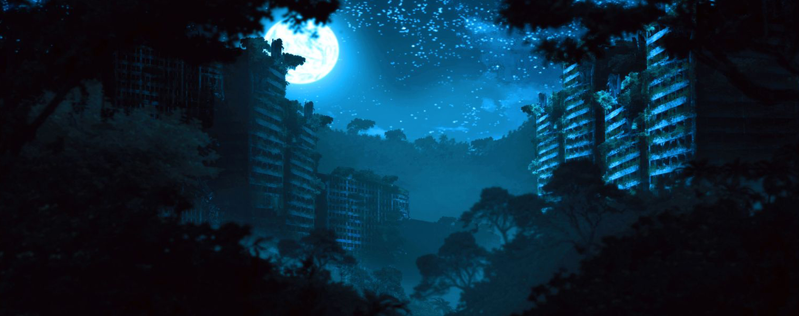

About me
My name is Kuenzang Dorji. As a passionate multimedia professional, my strengths lie in creative design, animation, photo manipulation, and video editing. I also have experience in broadcast media and digital production systems such as switchers, cameras, audio, live streaming and broadcasting. I thrive on meeting new challenges and utilizing my skills to ensure that all work is completed within strict timelines with a high level of accuracy and attention to detail.
Education
I hold a degree from De La Salle College of Saint Benilde in Manila, Philippines, where I pursued a Bachelor of Arts in Animation.
Skills
Concept Art

Exploring the new world, 2021
Ruins of Akatar, 2018
Ruins of Akatar, 2018
Nature will rule the world, 2017
Animation reel, 2015